选择理由
核对规则混合精度布局与昇腾算子粒度能否一致，并计入反量化成本。
复核13篇候选，10篇形成逐篇图文洞察，3篇保留文字分析。按权重表示与执行、预算选择与兑现、KV表示与结构组织；优先级是研究建议，不是昇腾实测。
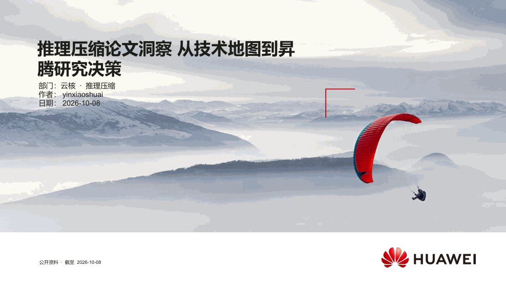
slide-01 · 打开原图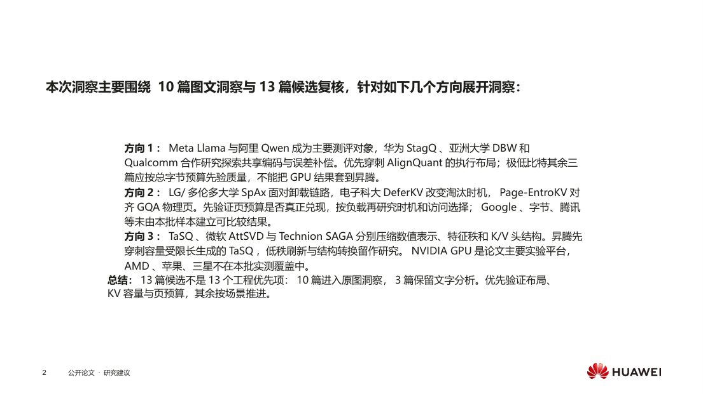
slide-02 · 打开原图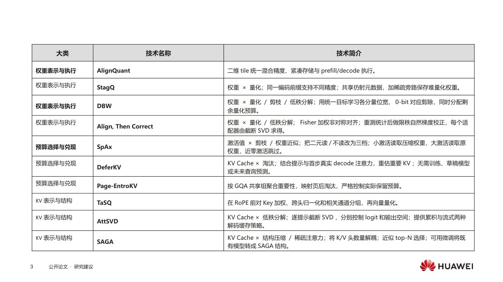
slide-03 · 打开原图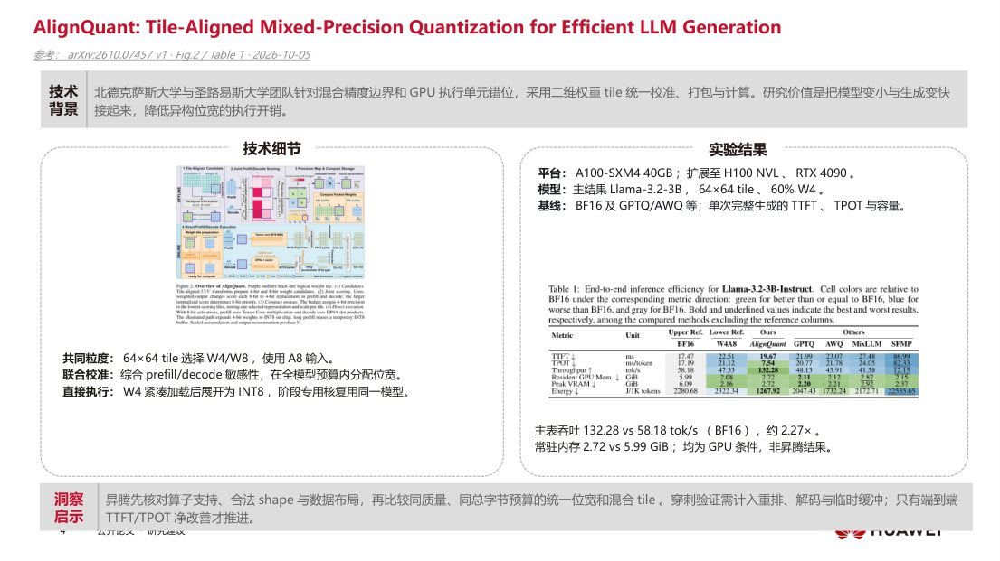
slide-04 · 打开原图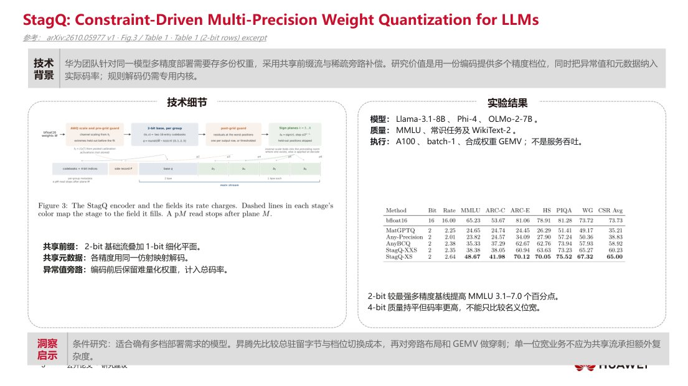
slide-05 · 打开原图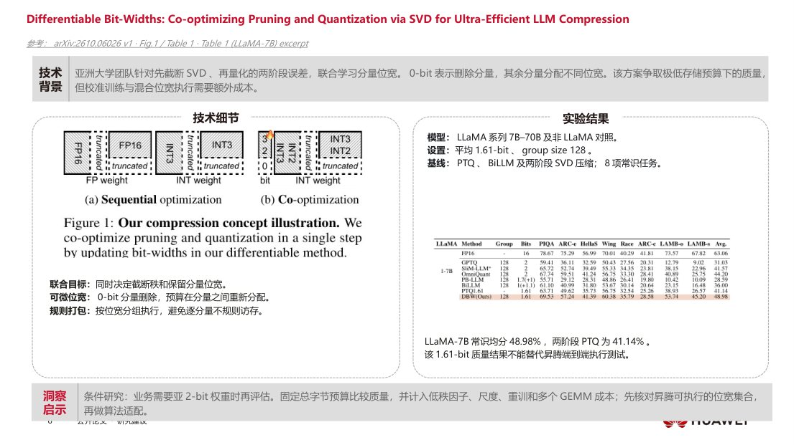
slide-06 · 打开原图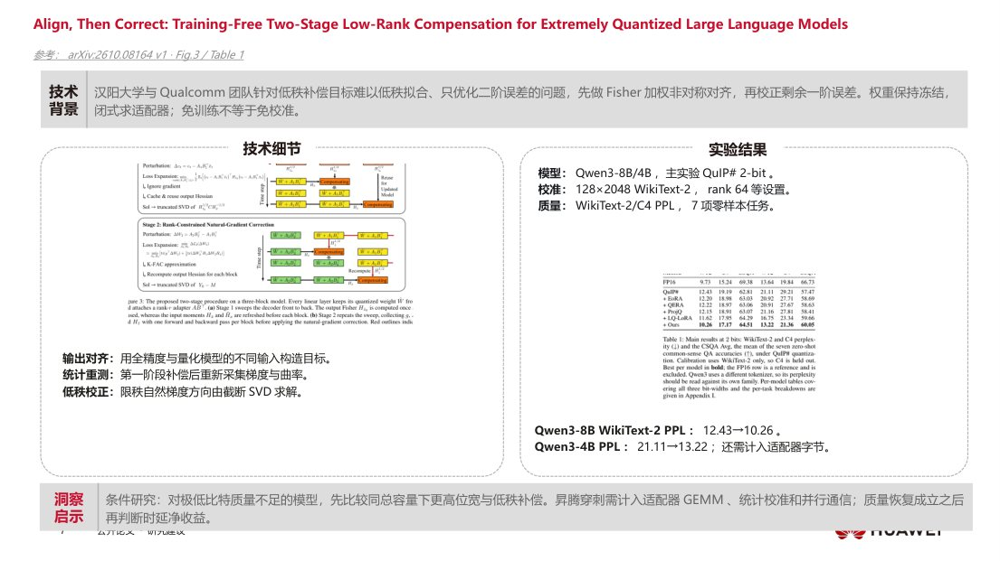
slide-07 · 打开原图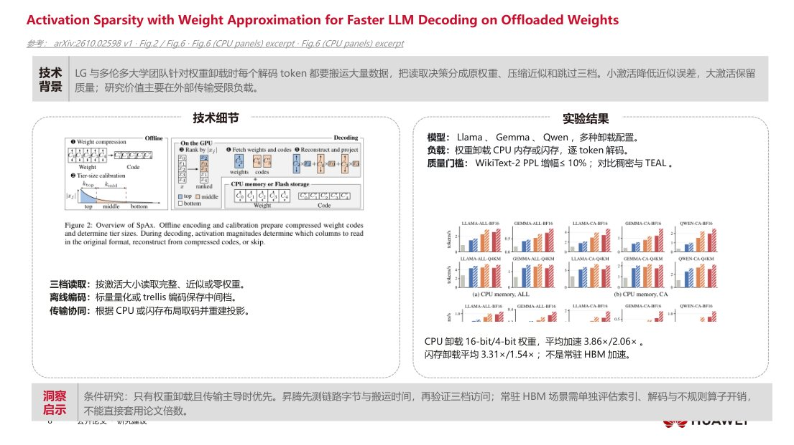
slide-08 · 打开原图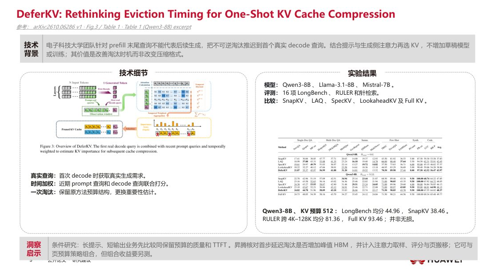
slide-09 · 打开原图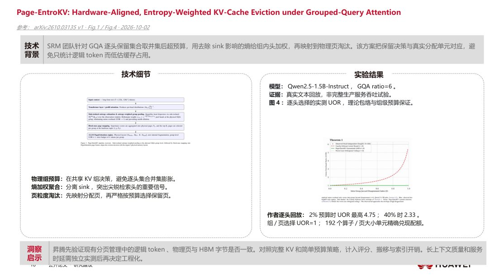
slide-10 · 打开原图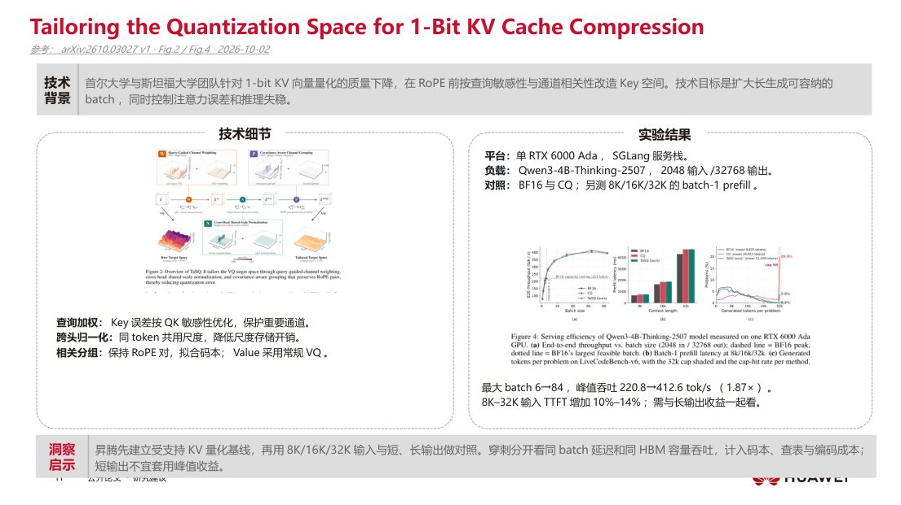
slide-11 · 打开原图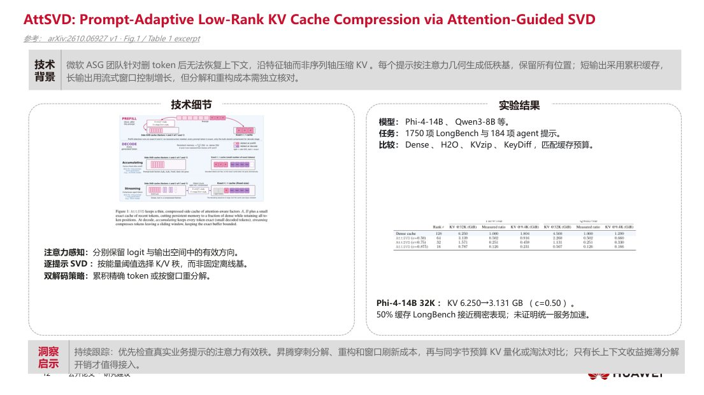
slide-12 · 打开原图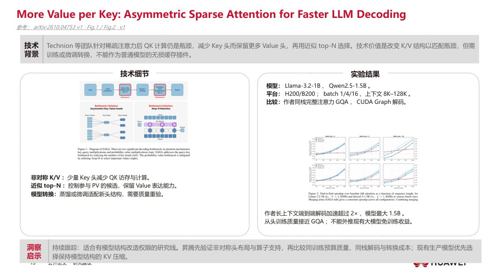
slide-13 · 打开原图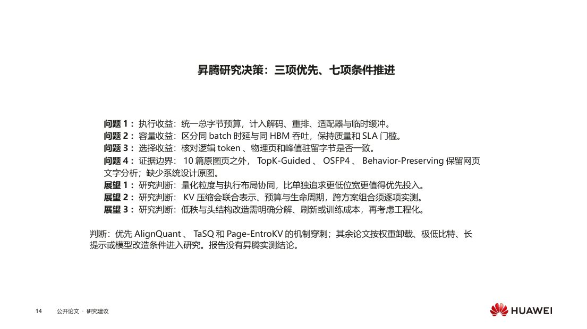
slide-14 · 打开原图 slide-15 · 打开原图
slide-15 · 打开原图核对规则混合精度布局与昇腾算子粒度能否一致，并计入反量化成本。
适合多精度部署预算；须验证前缀码流是否有实际执行收益。
适合极低总字节预算；把校准优化与恢复成本纳入比较。
评估量化后低秩恢复的质量收益及旁路矩阵执行代价。
仅在权重卸载搬运是瓶颈时优先，不能外推到HBM常驻模型。
比较延迟到首步解码再驱逐的质量及首词代价。
优先检查逻辑Token预算能否兑现为物理页回收；回放结果不是服务吞吐。
长生成容量受限时评估查询敏感KV码本，同时核对质量与TTFT。
提示相关低秩压缩需核对分解与重构成本；缓存减半不等于加速。
头布局改造和恢复训练成本较高；图文版使用已复核v1原图。
保留网页分析；原PDF缺少适合该模板的系统设计总览图，不以装饰图补位。
保留网页分析；原PDF缺少适合该模板的系统设计总览图，NVFP4结果仍作为事实依据。
保留网页分析；原PDF缺少适合该模板的系统设计总览图，KL评分仍纳入路线比较。